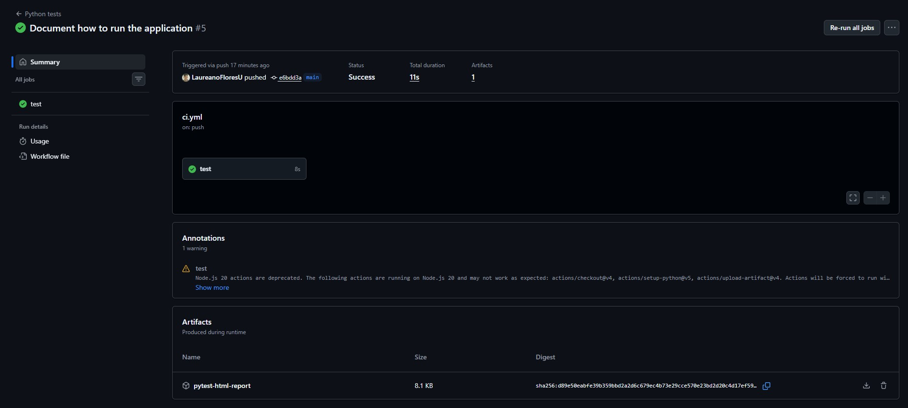
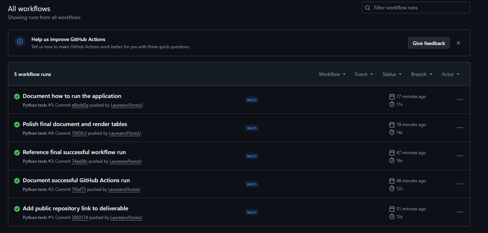

# Portada
Alumno: Laureano Tomás Flores
Legajo: 1142069
Materia: Testing de Aplicaciones (14883)
Docente: ABEL ISRAEL LAIME HUANCA
Fecha: 28/04/2026
3. Desarrollo de la aplicacion
4. Parte 1 - Diseno del escenario de prueba
5. Parte 2 - Automatizacion de pruebas
7. Parte 4 - Evidencia y analisis
10. Propuestas de futuras mejoras
Este trabajo practico tiene como objetivo aplicar conceptos de testing automatizado y DevOps mediante una solucion simple desarrollada en Python. La propuesta consiste en crear una funcionalidad sencilla, definir escenarios de prueba, automatizarlos con pytest e integrarlos a un pipeline de integracion continua usando GitHub Actions.
La funcionalidad elegida fue un sistema de descuentos. La aplicacion calcula el precio final de una compra de acuerdo con el tipo de cliente y el monto ingresado. Esta eleccion permite cubrir casos exitosos, errores de validacion y casos borde de forma clara.
El repositorio publico del trabajo es:
https://github.com/LaureanoFloresU/tpo2-testing-pipeline
Ademas, se incluye el proyecto local empaquetado en el archivo Flores_1142069_28042026_TPO2_repositorio.zip, que contiene el codigo fuente, los tests, el workflow de GitHub Actions y el reporte HTML generado localmente.
El objetivo es implementar un flujo basico de automatizacion de pruebas integrado a un pipeline CI/CD. Para cumplirlo se desarrollo una aplicacion en Python, se escribieron pruebas automatizadas con pytest y se configuro un workflow de GitHub Actions que instala dependencias, ejecuta los tests y genera un reporte HTML como artefacto.
La aplicacion se encuentra dentro de la carpeta src/descuentos. La funcion principal es calcular_precio_final(monto, tipo_cliente).
Reglas implementadas:
- Cliente regular: no recibe descuento.
- Cliente premium: recibe 10% de descuento.
- Cliente vip: recibe 20% de descuento.
- Compras desde $100000 reciben 5% adicional.
- No se aceptan montos negativos.
- No se aceptan tipos de cliente desconocidos.
Estructura del proyecto:
. |-- .github/workflows/ci.yml |-- docs/TPO2.md |-- reports/pytest-report.html |-- scripts/generate_pdf.py |-- src/descuentos/ | |-- __init__.py | |-- calculator.py | `-- main.py |-- tests/test_calculator.py |-- pyproject.toml |-- requirements.txt `-- README.md
El escenario elegido representa una compra en la que el sistema debe calcular el precio final luego de aplicar descuentos. El contexto simula una aplicacion comercial simple donde diferentes tipos de clientes obtienen distintos beneficios.
| Caso | Tipo | Datos de entrada | Resultado esperado |
|---|---|---|---|
| Cliente premium | Caso exitoso | Monto: 10000, cliente: premium | Precio final: 9000 |
| Monto negativo | Caso de error | Monto: -1, cliente: regular | Se lanza ValueError |
| Compra en limite | Caso borde | Monto: 100000, cliente: vip | Precio final: 75000 |
| Cliente inexistente | Caso de error adicional | Monto: 5000, cliente: estudiante | Se lanza ValueError |
El caso borde es importante porque verifica que el descuento adicional se aplique exactamente en el limite definido por la regla de negocio: compras desde $100000.
Los casos fueron automatizados con Python y pytest. El archivo de pruebas es tests/test_calculator.py.
Tests automatizados:
- test_cliente_premium_recibe_descuento_exitoso
- test_monto_negativo_genera_error
- test_compra_en_limite_recibe_descuento_adicional
- test_tipo_cliente_desconocido_genera_error
Comando para ejecutar las pruebas:
pytest --html=reports/pytest-report.html --self-contained-html
Resultado local obtenido:
4 passed
Este resultado confirma que la logica del sistema cumple con los escenarios definidos.
El pipeline fue configurado con GitHub Actions en el archivo .github/workflows/ci.yml.
El workflow se ejecuta automaticamente ante:
- push
- pull_request
Pasos del pipeline:
1. Descarga el repositorio con actions/checkout@v4.
2. Configura Python 3.12 con actions/setup-python@v5.
3. Instala dependencias desde requirements.txt.
4. Ejecuta los tests automatizados con pytest.
5. Genera el reporte HTML con pytest-html.
6. Publica el reporte como artefacto llamado pytest-html-report.
Fragmento del pipeline:
name: Python tests
on:
push:
pull_request:
jobs:
test:
runs-on: ubuntu-latest
steps:
- uses: actions/checkout@v4
- uses: actions/setup-python@v5
with:
python-version: "3.12"
- run: pip install -r requirements.txt
- run: pytest --html=reports/pytest-report.html --self-contained-html
El artefacto generado permite descargar un reporte visual de los tests ejecutados.
La ejecucion local de pytest finalizo correctamente:
tests/test_calculator.py::test_cliente_premium_recibe_descuento_exitoso PASSED tests/test_calculator.py::test_monto_negativo_genera_error PASSED tests/test_calculator.py::test_compra_en_limite_recibe_descuento_adicional PASSED tests/test_calculator.py::test_tipo_cliente_desconocido_genera_error PASSED 4 passed
El pipeline fue configurado correctamente en .github/workflows/ci.yml. La evidencia disponible en esta entrega es:
- Archivo de workflow incluido en .github/workflows/ci.yml.
- Ejecucion local de pytest finalizada correctamente.
- Reporte HTML generado en reports/pytest-report.html.
- Proyecto empaquetado en Flores_1142069_28042026_TPO2_repositorio.zip.
- Repositorio publico: https://github.com/LaureanoFloresU/tpo2-testing-pipeline
- Pipeline ejecutado correctamente en GitHub Actions: https://github.com/LaureanoFloresU/tpo2-testing-pipeline/actions/runs/24967342051
- Job test finalizado correctamente: https://github.com/LaureanoFloresU/tpo2-testing-pipeline/actions/runs/24967342051/job/73104323528
- Artefacto generado: pytest-html-report.
- Captura 1: listado de workflows con ejecuciones exitosas.
- Captura 2: detalle del workflow con estado Success y artefacto pytest-html-report.


Al realizar el push, el workflow Python tests debe verse en la pestaña Actions del repositorio. La ejecucion correcta debe mostrar:
- Estado general del workflow: completed / success.
- Job test: completed / success.
- Paso Install dependencies: OK.
- Paso Run automated tests: OK.
- Artefacto disponible: pytest-html-report.
- Commit ejecutado: 74aa08c6eeee805af0ae2067a6239f1e529bcd0e.
| Test | Resultado |
|---|---|
| Cliente premium recibe descuento exitoso | OK |
| Monto negativo genera error | OK |
| Compra en limite recibe descuento adicional | OK |
| Tipo de cliente desconocido genera error | OK |
Los tests pasaron porque la funcion implementada respeta las reglas de negocio. El caso exitoso confirma el descuento premium, el caso de error valida que un monto negativo no sea aceptado, el caso borde comprueba el limite exacto de $100000 y el caso de cliente inexistente verifica que el sistema rechace datos invalidos.
Automatizar pruebas dentro del pipeline permite detectar errores automaticamente cada vez que se sube codigo al repositorio. Esto evita depender solamente de revisiones manuales y ayuda a impedir que cambios defectuosos lleguen a la rama principal.
El impacto es positivo porque aumenta la confianza sobre cada cambio. Tambien mejora la trazabilidad, ya que GitHub Actions conserva logs de cada ejecucion. Esto permite saber que version del codigo fue probada, que tests se ejecutaron y cual fue el resultado.
Automatizar pruebas permite ahorrar tiempo, repetir validaciones sin esfuerzo adicional y reducir errores humanos. Las pruebas manuales pueden ser utiles para explorar el sistema, pero las pruebas automatizadas son mejores para comprobar reglas conocidas de manera constante.
Una dificultad fue asegurar que todas las dependencias estuvieran declaradas correctamente en requirements.txt. Otra dificultad fue ordenar la estructura del proyecto para que pytest pudiera importar el codigo desde src. Tambien fue necesario generar un artefacto HTML para cumplir con la evidencia solicitada.
Aplicaria este enfoque en proyectos web, APIs, sistemas administrativos, sistemas de ventas, facturacion o cualquier aplicacion que tenga reglas de negocio importantes. En un entorno real, automatizar pruebas dentro del pipeline ayuda a trabajar en equipo y reduce el riesgo de romper funcionalidades existentes.
El trabajo muestra como se conectan el desarrollo de software, el testing y las practicas DevOps. La automatizacion no reemplaza completamente el criterio humano, pero permite construir una base de validacion objetiva y repetible.
Integrar pytest con GitHub Actions permite que cada cambio sea verificado automaticamente. Esto mejora la calidad del proceso de desarrollo y facilita detectar errores antes de que lleguen a produccion.
Como mejoras futuras se podrian implementar:
- Agregar mas reglas de descuento.
- Usar tests parametrizados para cubrir mas combinaciones.
- Incorporar cobertura de codigo con pytest-cov.
- Agregar analisis de estilo con ruff.
- Publicar el reporte HTML como pagina estatica.
- Agregar ramas protegidas para exigir que el pipeline pase antes de integrar cambios.
- Incorporar pruebas de integracion si la aplicacion crece.
- Python Software Foundation. Documentacion oficial de Python: https://docs.python.org/3/
- pytest. Documentacion oficial: https://docs.pytest.org/
- GitHub. Documentacion oficial de GitHub Actions: https://docs.github.com/actions
- pytest-html. Documentacion oficial: https://pytest-html.readthedocs.io/